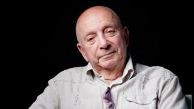

Давид Черкаський — один із найвідоміших українських мультиплікаторів. Він створив багато популярних анімаційних фільмів, які полюбилися дітям і дорослим. Його роботи відзначаються гумором, яскравими персонажами та цікавими сюжетами.
Найвідомішими його мультфільмами є «Острів скарбів» та «Пригоди капітана Врунгеля». Вони стали класикою української анімації. Його стиль легко впізнати завдяки унікальній подачі та атмосфері.